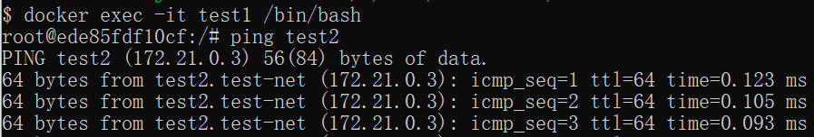
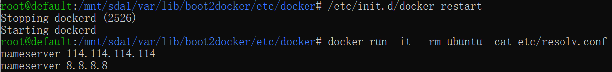

Docker container connection
Previously, we implemented accessing services running inside Docker containers through network ports.
Some network applications can run in containers. To allow external access to these applications, you can use the-Por-pparameter to specify port mapping.
Below we will implement connecting to a docker container via a port.
Network port mapping
We created a container for a Python application.
example@example:~$ docker run -d -P training/webapp python app.py fce072cc88cee71b1cdceb57c2821d054a4a59f67da6b416fceb5593f059fc6d
In addition, we can specify the network address the container binds to, such as 127.0.0.1.
We use-PBind port number, usedocker psYou can see container port 5000 is bound to host port 32768.
example@example:~$ docker ps CONTAINER ID IMAGE COMMAND ... PORTS NAMES fce072cc88ce training/webapp "python app.py" ... 0.0.0.0:32768->5000/tcp grave_hopper
We can also use-pThe flag is used to specify container port binding to host port.
The difference between the two methods is:
- -P：is the container's internal portRandommapped to the host's port.
- -p：is binding the container's internal port toSpecifiedthe host port.
example@example:~$ docker run -d -p 5000:5000 training/webapp python app.py 33e4523d30aaf0258915c368e66e03b49535de0ef20317d3f639d40222ba6bc0
example@example:~$ docker ps CONTAINER ID IMAGE COMMAND ... PORTS NAMES 33e4523d30aa training/webapp "python app.py" ... 0.0.0.0:5000->5000/tcp berserk_bartik fce072cc88ce training/webapp "python app.py" ... 0.0.0.0:32768->5000/tcp grave_hopper
In addition, we can specify the network address the container binds to, such as 127.0.0.1.
example@example:~$ docker run -d -p 127.0.0.1:5001:5000 training/webapp python app.py 95c6ceef88ca3e71eaf303c2833fd6701d8d1b2572b5613b5a932dfdfe8a857c example@example:~$ docker ps CONTAINER ID IMAGE COMMAND ... PORTS NAMES 95c6ceef88ca training/webapp "python app.py" ... 5000/tcp, 127.0.0.1:5001->5000/tcp adoring_stonebraker 33e4523d30aa training/webapp "python app.py" ... 0.0.0.0:5000->5000/tcp berserk_bartik fce072cc88ce training/webapp "python app.py" ... 0.0.0.0:32768->5000/tcp grave_hopper
In this way, we can access the container's port 5000 by visiting 127.0.0.1:5001.
In the examples above, TCP ports are bound by default. If you want to bind a UDP port, you can add /udp after the port./udp。
example@example:~$ docker run -d -p 127.0.0.1:5000:5000/udp training/webapp python app.py 6779686f06f6204579c1d655dd8b2b31e8e809b245a97b2d3a8e35abe9dcd22a example@example:~$ docker ps CONTAINER ID IMAGE COMMAND ... PORTS NAMES 6779686f06f6 training/webapp "python app.py" ... 5000/tcp, 127.0.0.1:5000->5000/udp drunk_visvesvaraya 95c6ceef88ca training/webapp "python app.py" ... 5000/tcp, 127.0.0.1:5001->5000/tcp adoring_stonebraker 33e4523d30aa training/webapp "python app.py" ... 0.0.0.0:5000->5000/tcp berserk_bartik fce072cc88ce training/webapp "python app.py" ... 0.0.0.0:32768->5000/tcp grave_hopper
docker portThe command allows us to quickly view the port binding status.
example@example:~$ docker port adoring_stonebraker 5000 127.0.0.1:5001
Docker container interconnection
Port mapping is not the only way to connect Docker to another container.
Docker has a connection system that allows multiple containers to be connected together and share connection information.
A Docker connection creates a parent-child relationship, in which the parent container can see the child container's information.
Container Naming
When we create a container, Docker automatically names it. In addition, we can also use --name.--nameidentifier to name the container, for example:
example@example:~$ docker run -d -P --name example training/webapp python app.py 43780a6eabaaf14e590b6e849235c75f3012995403f97749775e38436db9a441
We can usedocker pscommand to view the container name.
example@example:~$ docker ps -l CONTAINER ID IMAGE COMMAND ... PORTS NAMES 43780a6eabaa training/webapp "python app.py" ... 0.0.0.0:32769->5000/tcp example
New Network
First, create a new Docker network below.$ docker network create -d bridge test-net

Parameter description:
-dThe parameter specifies the Docker network type, with bridge and overlay.
Among them, the overlay network type is used for Swarm mode; you can ignore it in this section.
Connect Containers
Run a container and connect it to the newly created test-net network:
$ docker run -itd --name test1 --network test-net ubuntu /bin/bash
Open a new terminal, run another container and add it to the test-net network:
$ docker run -itd --name test2 --network test-net ubuntu /bin/bash
Click the image to view a larger version:

Next, use ping to prove that the test1 container and test2 container have established an interconnection relationship.
If the test1 and test2 containers do not have the ping command, execute the following command inside the containers to install ping (learn and use immediately: you can install it in one container, commit the container to an image, and then rerun the above two containers with the new image).
apt-get update apt install iputils-ping
Enter the following command in the test1 container:
Click the image to view a larger version:

Similarly, the test2 container will also successfully connect to:
Click the image to view a larger version:

In this way, the test1 container and test2 container have established an interconnection relationship.
If you have multiple containers that need to connect to each other, Docker Compose is recommended, and it will be introduced later.
Configure DNS
We can add the following content to the host's /etc/docker/daemon.json file to set the DNS for all containers:
{
"dns" : [
"114.114.114.114",
"8.8.8.8"
]
}
After configuration, the DNS of the started container will be automatically set to 114.114.114.114 and 8.8.8.8.
After configuration, you need to restart Docker for it to take effect.
To check whether the container's DNS has taken effect, use the following command, which will output the container's DNS information:
$ docker run -it --rm ubuntu cat etc/resolv.conf
Click the image to view a larger version:

Manually specify the container's configuration
If you only want to set DNS on a specific container, you can use the following command:
$ docker run -it --rm -h host_ubuntu --dns=114.114.114.114 --dns-search=test.com ubuntu
Parameter description:
--rm: Automatically clean up the container's internal file system when the container exits.
-h HOSTNAME or --hostname=HOSTNAME: Set the container's hostname; it will be written to /etc/hostname and /etc/hosts inside the container.
--dns=IP_ADDRESS: Add a DNS server to the container's /etc/resolv.conf so that the container uses this server to resolve all hostnames not in /etc/hosts.
--dns-search=DOMAIN: Set the container's search domain. When the search domain is set to .example.com, when searching for a host named host, DNS will search not only for host but also for host.example.com.
Click the image to view a larger version:

If not specified when the container starts--dnsand--dns-search, Docker will by default use the host machine's /etc/resolv.conf to configure the container's DNS.
other extensions